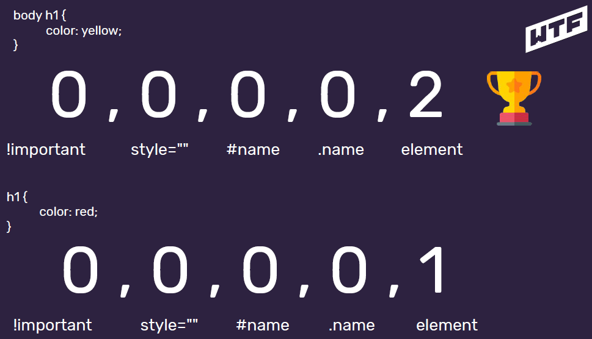
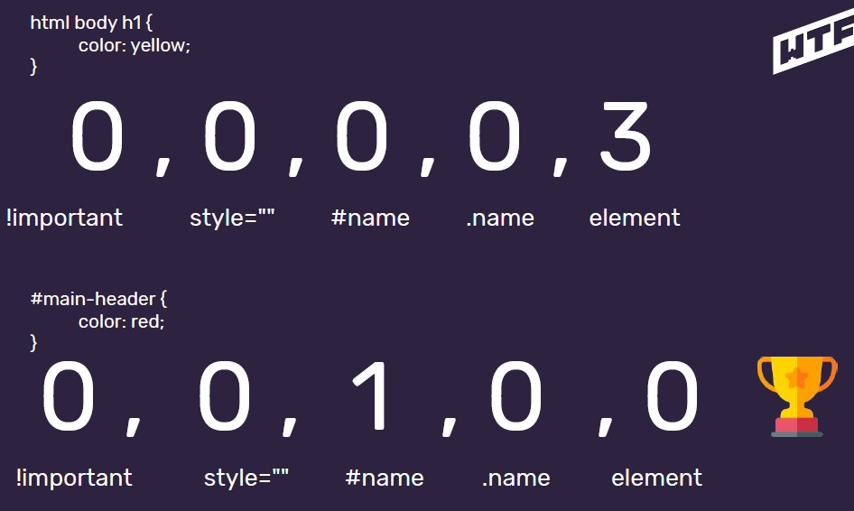
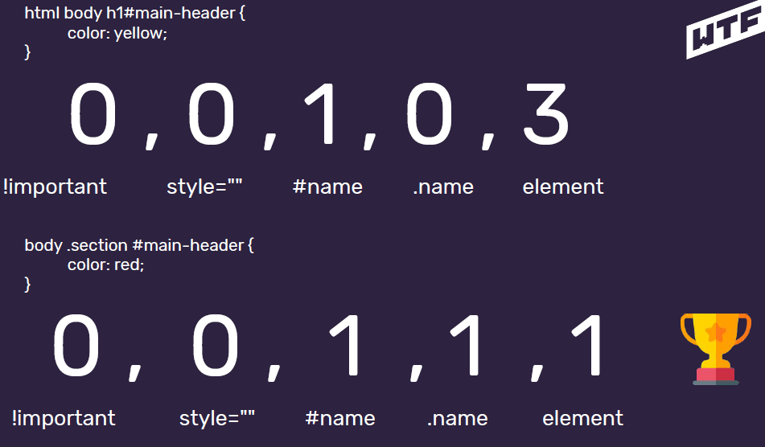
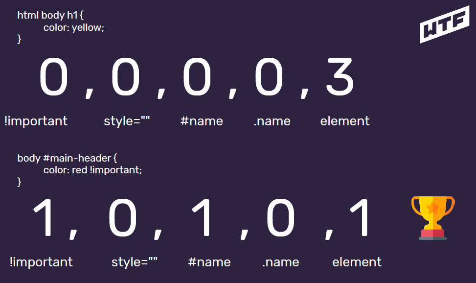
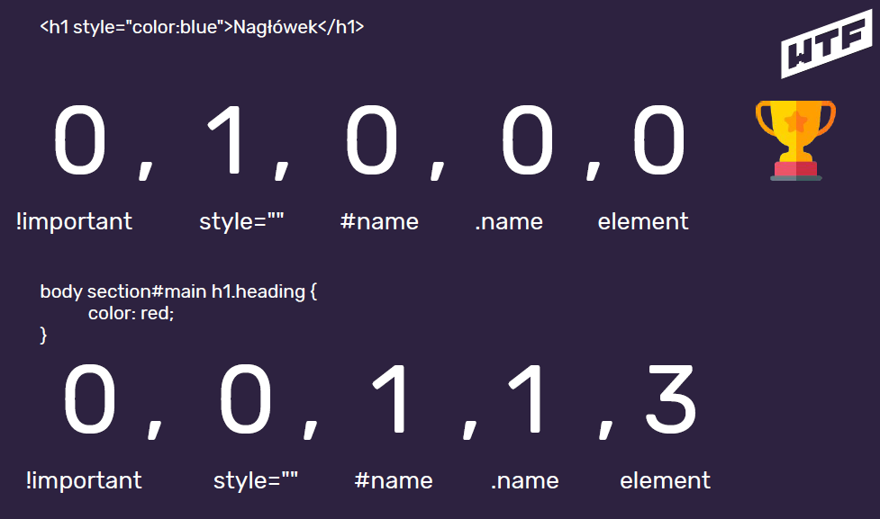
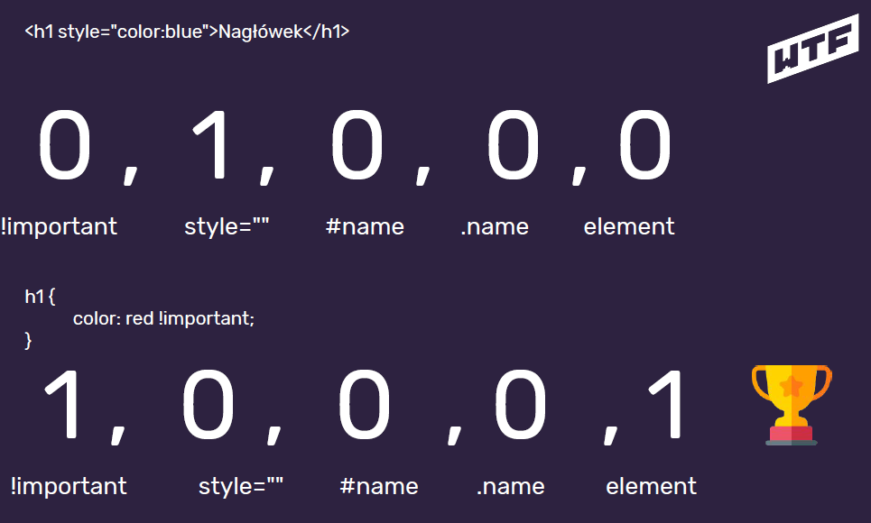

CSS II
Style załączać do kodu HTML poprzez dodanie atrybutu style do znacznika:
<znacznik style="color: yellow;">treść</znacznik>
Styl przy znaczniku z wykorzystaniem atrybutu style nazywamy stylem inline (liniowym). W ten
sposób dodane style są stosowane tylko do znacznika, przy którym występują.
Czy to ma sens?
Takie stylowanie wprowadza spore zamieszanie (bałagan) do kodu. Sprawia, że kod jest mniej
czytelny, już przy niewielkiej ilości zdefiniowanych własności CSS przy jednym elemencie.
Kod się przez to rozrasta i coraz ciężej się przez to w nim połapać.
Dlatego w CSS'ie istnieją różne typy selektorów, dzięki którym możemy łatwiej przypisać co
jak ma być ostylowane. Rodzaje selektorów:
-
element - znacznik,
-
# - id,
-
class - klasa.
Dzięki selektorom możemy dane własności CSS przypisać do jednego konkretnego obiektu
nawiązując do jago id - identyfikatora(#), do jakiejś większej grupy dzięki zastosowaniu
klasy (class) oraz poprzez przypisania do elementu.
Już do tej pory korzystaliśmy z metody stylowania po elementach. Czyli używaliśmy nazwy
danego elementu (znacznika, tag'u) i do tego dopisywaliśmy kolejne własności. Np.:
body {
background: #fefefe;
}
Ta metoda nie pozwala nam na wyróżnianie tych tagów, ponieważ dla każdego stosuje taki sam styl.
Łatwiej jest wyróżnić nam część, grupę elementów poprzez zastosowanie stylowania po klasie
(class). Możemy ją przypisać kilku na raz elementom i dzięki temu stworzyć grupę podobnie
wyglądającą w naszym dokumencie. Klasę dodajemy jako atrybut do znacznika:
<znacznik class="name">treść</znacznik>
.name {
właściwość: wartość;
}
Czyli naszym wskazaniem dla kodu, że poprzez style CSS odnosimy się do danej klasy jest użycie
kropki (.) przed nazwą klasy. Jak to zostało zrobione w powyższym przykładzie.
Nazwę klasy zapisujemy kebab-case'em
Stylowanie po id (#) umożliwia przypisanie konkretnych własności dla konkretnego box'u. Podobnie
jak przy stosowania zakotwiczenia przy nawigacji w dokumencie, tak samo odwołujemy się do tego
samego atrybutu poprzez selektor id. W tym przypadku w naszym kodzie poprzez zastosowanie
znaczka # (hash) w pliku CSS'owym i nazwy identyfikatora, odnosimy się do tego elementu.
<znacznik id="name">treść</znacznik>
#name {
właściwość: wartość;
}
Jak wcześniej pisałem, że ważna jest zasada, która mówi, że powinno być
jedno id na stronie.
Możliwe jest również łączenie selektorów. Daje to na przykład możliwość zmiany koloru odnośników
(a) tylko w jednej sekcji (np. w nav - nawigacji dokumentu). Żeby to się udało musimy zapisać w
pliku CSS:
nav a {
color: #04ac26;
}
Taki zapis spowoduje, że własności zmienią się dla linków tylko w bloku nawigacji. Mówimy, że
zagnieżdzamy style, czyli mówimy przeglądarce, że ostyluj tylko wybrany element znajdujący się w
tym bloku.
Mamy również możliwość z skorzystania z !important. Wprowadza on sporo zamieszania w kod i jest
zmorą jeśli chodzi o stylowanie. Nie powinno się go używać. Użycie go spowoduje, że będzie
stosować daną własność elementu dla całego dokumentu. Nawet pomijając własności określone dla
danego elementu dla danej sekcji.
nav a {
color: #04ac26;
}
a {
color: #c77d0f !important;
}
Powyższy zapis spowoduje, że wszystkie linki będą miały jeden kolor mimo, że dla nawigacji mają
przypisany inny kolor.
Zagadka 🙂 Jakiego koloru będzie treść?
#name {
color: red;
}
<span style=”color: yellow;” id="name">treść</span>
Odpowiedź: żółta 😛
Specyficzność w CSS
Jest to reguła ważności, która określa kiedy stosować jaki styl dla danego elementu. W
szczególności gdy jest do niego przypisane kilka własności. Działa ona podobnie jak klasyfikacja
medalowa na igrzyskach, że liczy się pierwsze złote medale przed srebrnymi i brązowymi. W naszym
przypadku najważniejszy jest:
- !important
- style = "" - styl liniowy,
- #name - id,
- .name - klasa,
- element.
Dla przykładu mamy dwa przypadki w kilku przykładach:
-

Wygrywa pierwszy, ponieważ więcej ma wymienionych
elementów.
-

Wygrywa dugi przypadek, ponieważ odwołuje się
bezpośrednio do id, co jest wyżej w klasyfikacji.
-

Tutaj również wygrywa drugi przypadek mimo, że oba
odwołują się do id ale w drugim występuje odwołanie do klasy co jest wyżej cenione w
klasyfikacji.
-

Tutaj wygrywa drugi przypadek, w którym występuje
odwołanie do !importanta
-

Tutaj ważniejszy jest pierwszy przypadek, w którym jest
przypadkiem liniowym (inline)
-

Kolejny przypadek !importanta który wygrywa z wszystkimi
(drugi przypadek)
Jeśli specyficzność jest równa to pierwszeństwo ma selektor "bliżej"
elementu. Czyli jeśli style mamy załączone z pliku w sekcji head. To styl niżej
znajdujący się będzie używany. Trzeba sobie wyobrazić, że przeklejamy plik ze stylami do
dokumentu html i przeglądarka analizując kod zastosuje tą własność która ma mniejszą
odległość między miejscem użycia, a samą własnością.
Warto dodawać klasę do wszystkich elementów i unikać zagnieżdżeń. Ułatwi to dalszą pracę i
uniknie się konfliktów specyficzności. Zawszę będą brane pod uwagę te style, które
zamierzamy użyć.
Bonusik :)
Strona z generatorem palet na stronę : https://coolors.co